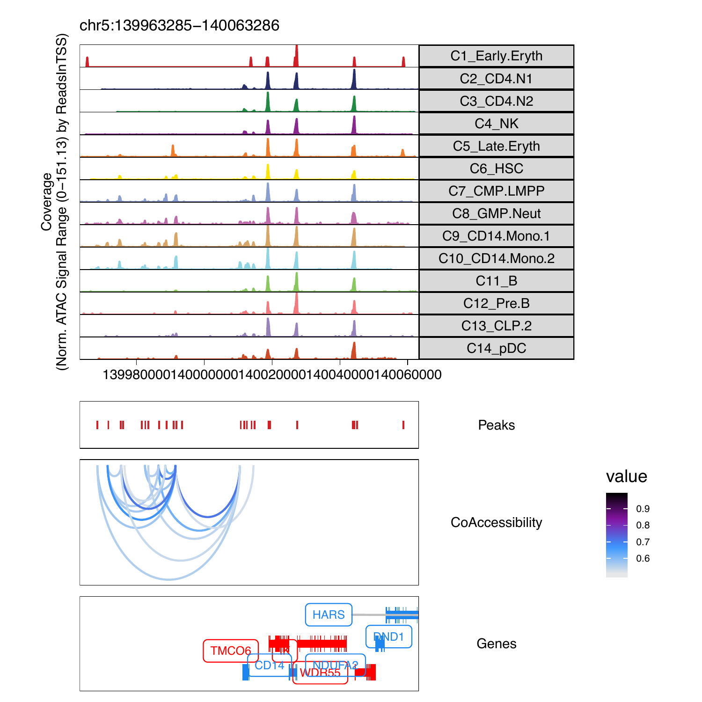

14.1 Co-accessibility with ArchR
## ArchR logging to : ArchRLogs/ArchR-addCoAccessibility-11a706a1e44aa-Date-2020-04-15_Time-11-54-46.log
## If there is an issue, please report to github with logFile!
## 2020-04-15 11:54:46 : Computing KNN, 0.009 mins elapsed.
## 2020-04-15 11:54:48 : Identifying Non-Overlapping KNN pairs, 0.032 mins elapsed.
## 2020-04-15 11:54:51 : Identified 491 Groupings!, 0.084 mins elapsed.
## 2020-04-15 11:54:54 : Computing Co-Accessibility chr1 (1 of 23), 0.134 mins elapsed.
## 2020-04-15 11:55:00 : Computing Co-Accessibility chr2 (2 of 23), 0.245 mins elapsed.
## 2020-04-15 11:55:05 : Computing Co-Accessibility chr3 (3 of 23), 0.325 mins elapsed.
## 2020-04-15 11:55:09 : Computing Co-Accessibility chr4 (4 of 23), 0.386 mins elapsed.
## 2020-04-15 11:55:12 : Computing Co-Accessibility chr5 (5 of 23), 0.438 mins elapsed.
## 2020-04-15 11:55:15 : Computing Co-Accessibility chr6 (6 of 23), 0.493 mins elapsed.
## 2020-04-15 11:55:20 : Computing Co-Accessibility chr7 (7 of 23), 0.564 mins elapsed.
## 2020-04-15 11:55:24 : Computing Co-Accessibility chr8 (8 of 23), 0.634 mins elapsed.
## 2020-04-15 11:55:27 : Computing Co-Accessibility chr9 (9 of 23), 0.685 mins elapsed.
## 2020-04-15 11:55:30 : Computing Co-Accessibility chr10 (10 of 23), 0.737 mins elapsed.
## 2020-04-15 11:55:34 : Computing Co-Accessibility chr11 (11 of 23), 0.805 mins elapsed.
## 2020-04-15 11:55:38 : Computing Co-Accessibility chr12 (12 of 23), 0.874 mins elapsed.
## 2020-04-15 11:55:42 : Computing Co-Accessibility chr13 (13 of 23), 0.937 mins elapsed.
## 2020-04-15 11:55:44 : Computing Co-Accessibility chr14 (14 of 23), 0.979 mins elapsed.
## 2020-04-15 11:55:47 : Computing Co-Accessibility chr15 (15 of 23), 1.028 mins elapsed.
## 2020-04-15 11:55:51 : Computing Co-Accessibility chr16 (16 of 23), 1.085 mins elapsed.
## 2020-04-15 11:55:55 : Computing Co-Accessibility chr17 (17 of 23), 1.146 mins elapsed.
## 2020-04-15 11:55:58 : Computing Co-Accessibility chr18 (18 of 23), 1.206 mins elapsed.
## 2020-04-15 11:56:01 : Computing Co-Accessibility chr19 (19 of 23), 1.251 mins elapsed.
## 2020-04-15 11:56:05 : Computing Co-Accessibility chr20 (20 of 23), 1.327 mins elapsed.
## 2020-04-15 11:56:09 : Computing Co-Accessibility chr21 (21 of 23), 1.384 mins elapsed.
## 2020-04-15 11:56:11 : Computing Co-Accessibility chr22 (22 of 23), 1.424 mins elapsed.
## 2020-04-15 11:56:14 : Computing Co-Accessibility chrX (23 of 23), 1.468 mins elapsed.
## ArchR logging successful to : ArchRLogs/ArchR-addCoAccessibility-11a706a1e44aa-Date-2020-04-15_Time-11-54-46.log
cA <- getCoAccessibility(
ArchRProj = projHeme5,
corCutOff = 0.5,
resolution = 1,
returnLoops = FALSE
)
cA## DataFrame with 64824 rows and 4 columns
## queryHits subjectHits seqnames correlation
##
## 1 5 10 chr1 0.63855416236086
## 2 10 5 chr1 0.63855416236086
## 3 21 22 chr1 0.551520040138677
## 4 22 21 chr1 0.551520040138677
## 5 25 37 chr1 0.535392737290744
## … … … … …
## 64820 143907 143906 chrX 0.510896735395573
## 64821 143932 143936 chrX 0.501021498357938
## 64822 143936 143932 chrX 0.501021498357938
## 64823 143977 143978 chrX 0.550319862774772
## 64824 143978 143977 chrX 0.550319862774772
## GRanges object with 144009 ranges and 0 metadata columns:
## seqnames ranges strand
##
## Mono chr1 752499-752999 *
## NK chr1 762651-763151 *
## B chr1 801006-801506 *
## B chr1 805039-805539 *
## CLP chr1 845325-845825 *
## … … … …
## Erythroid chrX 154664540-154665040 *
## NK chrX 154807324-154807824 *
## PreB chrX 154840785-154841285 *
## PreB chrX 154842404-154842904 *
## NK chrX 154862017-154862517 *
## ——-
## seqinfo: 23 sequences from an unspecified genome; no seqlengths
cA <- getCoAccessibility(
ArchRProj = projHeme5,
corCutOff = 0.5,
resolution = 1,
returnLoops = TRUE
)
cA[[1]]## GRanges object with 32412 ranges and 1 metadata column:
## seqnames ranges strand | value
##|
## [1] chr1 845575-856640 * | 0.63855416236086
## [2] chr1 894704-895233 * | 0.551520040138677
## [3] chr1 901499-940519 * | 0.535392737290744
## [4] chr1 968584-1004206 * | 0.541750176412625
## [5] chr1 974287-975116 * | 0.614286275264492
## … … … … . …
## [32408] chrX 153306085-153342739 * | 0.54575277183448
## [32409] chrX 153523581-153529374 * | 0.539921104229481
## [32410] chrX 153582820-153583471 * | 0.510896735395573
## [32411] chrX 153637615-153656023 * | 0.501021498357938
## [32412] chrX 153980218-153990364 * | 0.550319862774772
## ——-
## seqinfo: 23 sequences from an unspecified genome; no seqlengths
cA <- getCoAccessibility(
ArchRProj = projHeme5,
corCutOff = 0.5,
resolution = 1000,
returnLoops = TRUE
)
cA[[1]]## GRanges object with 30997 ranges and 1 metadata column:
## seqnames ranges strand | value
##|
## [1] chr1 845500-856500 * | 0.63855416236086
## [2] chr1 894500-895500 * | 0.551520040138677
## [3] chr1 901500-940500 * | 0.535392737290744
## [4] chr1 968500-1004500 * | 0.541750176412625
## [5] chr1 974500-975500 * | 0.614286275264492
## … … … … . …
## [30993] chrX 153306500-153342500 * | 0.54575277183448
## [30994] chrX 153523500-153529500 * | 0.539921104229481
## [30995] chrX 153582500-153583500 * | 0.510896735395573
## [30996] chrX 153637500-153656500 * | 0.501021498357938
## [30997] chrX 153980500-153990500 * | 0.550319862774772
## ——-
## seqinfo: 23 sequences from an unspecified genome; no seqlengths
cA <- getCoAccessibility(
ArchRProj = projHeme5,
corCutOff = 0.5,
resolution = 10000,
returnLoops = TRUE
)
cA[[1]]## GRanges object with 21142 ranges and 1 metadata column:
## seqnames ranges strand | value
##|
## [1] chr1 845000-855000 * | 0.63855416236086
## [2] chr1 895000 * | 0.551520040138677
## [3] chr1 905000-945000 * | 0.535392737290744
## [4] chr1 965000-1005000 * | 0.541750176412625
## [5] chr1 975000 * | 0.614286275264492
## … … … … . …
## [21138] chrX 153305000-153345000 * | 0.54575277183448
## [21139] chrX 153525000 * | 0.539921104229481
## [21140] chrX 153585000 * | 0.510896735395573
## [21141] chrX 153635000-153655000 * | 0.501021498357938
## [21142] chrX 153985000-153995000 * | 0.550319862774772
## ——-
## seqinfo: 23 sequences from an unspecified genome; no seqlengths
Plotting browser tracks with CoAccessibility
markerGenes <- c(
"CD34", #Early Progenitor
"GATA1", #Erythroid
"PAX5", "MS4A1", #B-Cell Trajectory
"CD14", #Monocytes
"CD3D", "CD8A", "TBX21", "IL7R" #TCells
)
p <- ArchRBrowserTrack(
ArchRProj = projHeme5,
groupBy = "Clusters2",
geneSymbol = markerGenes,
upstream = 50000,
downstream = 50000,
loops = getCoAccessibility(projHeme5)
)## ArchR logging to : ArchRLogs/ArchR-ArchRBrowserTrack-11a703dda2936-Date-2020-04-15_Time-11-56-18.log
## If there is an issue, please report to github with logFile!
## 2020-04-15 11:56:18 : Validating Region, 0.007 mins elapsed.
## GRanges object with 9 ranges and 2 metadata columns:
## seqnames ranges strand | gene_id symbol
##|
## [1] chr1 208059883-208084683 - | 947 CD34
## [2] chrX 48644982-48652717 + | 2623 GATA1
## [3] chr9 36838531-37034476 - | 5079 PAX5
## [4] chr11 60223282-60238225 + | 931 MS4A1
## [5] chr5 140011313-140013286 - | 929 CD14
## [6] chr11 118209789-118213459 - | 915 CD3D
## [7] chr2 87011728-87035519 - | 925 CD8A
## [8] chr17 45810610-45823485 + | 30009 TBX21
## [9] chr5 35856977-35879705 + | 3575 IL7R
## ——-
## seqinfo: 24 sequences from hg19 genome ## 2020-04-15 11:56:18 : Adding Bulk Tracks (1 of 9), 0.01 mins elapsed.
## 2020-04-15 11:56:21 : Adding Feature Tracks (1 of 9), 0.053 mins elapsed.
## 2020-04-15 11:56:21 : Adding Loop Tracks (1 of 9), 0.056 mins elapsed.
## 2020-04-15 11:56:21 : Adding Gene Tracks (1 of 9), 0.059 mins elapsed.
## 2020-04-15 11:56:21 : Plotting, 0.065 mins elapsed.
## 2020-04-15 11:56:24 : Adding Bulk Tracks (2 of 9), 0.1 mins elapsed.
## 2020-04-15 11:56:26 : Adding Feature Tracks (2 of 9), 0.137 mins elapsed.
## 2020-04-15 11:56:26 : Adding Loop Tracks (2 of 9), 0.139 mins elapsed.
## 2020-04-15 11:56:26 : Adding Gene Tracks (2 of 9), 0.144 mins elapsed.
## 2020-04-15 11:56:27 : Plotting, 0.151 mins elapsed.
## 2020-04-15 11:56:28 : Adding Bulk Tracks (3 of 9), 0.181 mins elapsed.
## 2020-04-15 11:56:30 : Adding Feature Tracks (3 of 9), 0.202 mins elapsed.
## 2020-04-15 11:56:30 : Adding Loop Tracks (3 of 9), 0.205 mins elapsed.
## 2020-04-15 11:56:31 : Adding Gene Tracks (3 of 9), 0.217 mins elapsed.
## 2020-04-15 11:56:31 : Plotting, 0.223 mins elapsed.
## 2020-04-15 11:56:33 : Adding Bulk Tracks (4 of 9), 0.257 mins elapsed.
## 2020-04-15 11:56:34 : Adding Feature Tracks (4 of 9), 0.272 mins elapsed.
## 2020-04-15 11:56:34 : Adding Loop Tracks (4 of 9), 0.275 mins elapsed.
## 2020-04-15 11:56:34 : Adding Gene Tracks (4 of 9), 0.281 mins elapsed.
## 2020-04-15 11:56:35 : Plotting, 0.287 mins elapsed.
## 2020-04-15 11:56:36 : Adding Bulk Tracks (5 of 9), 0.31 mins elapsed.
## 2020-04-15 11:56:37 : Adding Feature Tracks (5 of 9), 0.327 mins elapsed.
## 2020-04-15 11:56:37 : Adding Loop Tracks (5 of 9), 0.329 mins elapsed.
## 2020-04-15 11:56:38 : Adding Gene Tracks (5 of 9), 0.335 mins elapsed.
## 2020-04-15 11:56:38 : Plotting, 0.339 mins elapsed.
## 2020-04-15 11:56:40 : Adding Bulk Tracks (6 of 9), 0.367 mins elapsed.
## 2020-04-15 11:56:41 : Adding Feature Tracks (6 of 9), 0.384 mins elapsed.
## 2020-04-15 11:56:41 : Adding Loop Tracks (6 of 9), 0.385 mins elapsed.
## 2020-04-15 11:56:41 : Adding Gene Tracks (6 of 9), 0.391 mins elapsed.
## 2020-04-15 11:56:41 : Plotting, 0.395 mins elapsed.
## 2020-04-15 11:56:43 : Adding Bulk Tracks (7 of 9), 0.422 mins elapsed.
## 2020-04-15 11:56:44 : Adding Feature Tracks (7 of 9), 0.443 mins elapsed.
## 2020-04-15 11:56:44 : Adding Loop Tracks (7 of 9), 0.447 mins elapsed.
## 2020-04-15 11:56:45 : Adding Gene Tracks (7 of 9), 0.455 mins elapsed.
## 2020-04-15 11:56:45 : Plotting, 0.459 mins elapsed.
## 2020-04-15 11:56:47 : Adding Bulk Tracks (8 of 9), 0.489 mins elapsed.
## 2020-04-15 11:56:48 : Adding Feature Tracks (8 of 9), 0.506 mins elapsed.
## 2020-04-15 11:56:48 : Adding Loop Tracks (8 of 9), 0.51 mins elapsed.
## 2020-04-15 11:56:49 : Adding Gene Tracks (8 of 9), 0.522 mins elapsed.
## 2020-04-15 11:56:49 : Plotting, 0.526 mins elapsed.
## 2020-04-15 11:56:51 : Adding Bulk Tracks (9 of 9), 0.562 mins elapsed.
## 2020-04-15 11:56:52 : Adding Feature Tracks (9 of 9), 0.578 mins elapsed.
## 2020-04-15 11:56:52 : Adding Loop Tracks (9 of 9), 0.58 mins elapsed.
## 2020-04-15 11:56:53 : Adding Gene Tracks (9 of 9), 0.589 mins elapsed.
## 2020-04-15 11:56:53 : Plotting, 0.594 mins elapsed.
## ArchR logging successful to : ArchRLogs/ArchR-ArchRBrowserTrack-11a703dda2936-Date-2020-04-15_Time-11-56-18.log
To plot a track we can simply print one from the list

plotPDF(plotList = p,
name = "Plot-Tracks-Marker-Genes-with-CoAccessibility.pdf",
ArchRProj = projHeme5,
addDOC = FALSE, width = 5, height = 5)## NULL
## NULL
## NULL
## NULL
## NULL
## NULL
## NULL
## NULL
## NULL
## [1] 0